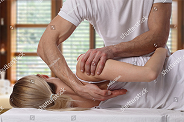
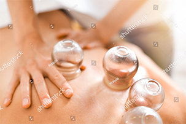

Terapia manualna - Gdańsk
Chiropraktyka
Masaż kręgosłupa
Klawiterapia
Trójmiasto

Kręgarz
Chiropraktyka
Terapia Manualna
Za pomocą terapii manualnej poprzedzonej przez masaż głęboki można
skutecznie wyleczyć zdecydowaną większość schorzeń bólowych opartych na stawach,
kręgosłupie, mięśniach i skorygować późniejszą postawę pacjenta. Dzięki terapii
unikniesz nieprzespanych nocy, dyskomfortu w codziennym funkcjonowaniu, zażywania leków
przeciwbólowych i operacji.

Banki
Akupresura
Klawiterapia
Chińskie Bańki są świetnym narzędziem do rozluźnienia pospinanych mięśni umożliwiając
przy tym odpowiednią korekte postawy pacjenta. Klawiterapia pozwala poprawić
funkcjonowanie stawów, odblokowuje spięcia, rozmasowuje blizny i ułatwia dalszą prace
manualną terapeuty. Akupresura poprzez działania na konkretnych punktach, pozwala
korzystnie wpływać na osłabione organy pacjenta.
Masaż blizn
Masaż migrenowy
Masaż powłok brzusznych
Masaż antymigrenowy uspokoi pacjenta i zniweluje napięcie migrenowe,
kolejne sesje wokół połączenia głowowo-szyjnego znacznie zredukują częstotliwość
objawów. Masaż blizn (również klawikami) pomoże pacjentowi uniknąc wielu dotkliwych
dolegliwości z nimi związanymi. Masaż powłok brzusznych lub masaż głowy jest często
bardzo pomocny przy dolegliwościach związanych z tym zakresem ciała. Masaż klasyczny
odpręży przemęczonego pacjenta.